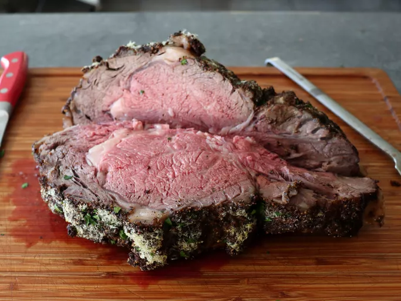

Pepper Parm Prime Rib

Chef John's pepper Parm prime rib is rich, savory, and roasted to medium-rare perfection—an elegant way to prepare this premium cut of beef.
Ingredients
- 1 (5 pound) bone-in prime rib of beef, fat cap trimmed
- 5 teaspoons kosher salt (about 1 teaspoon per pound of meat)
- 4 tablespoons very soft butter
- 1/2 cup freshly grated Parmigiano Reggiano cheese, plus more as needed
- 2 rounded tablespoons coarse ground black pepper, plus more as needed
- 2 cups beef broth
- 2 cups water
Directions
- Optional step: Use a sharp knife to cut down 1/8 inch through the tough membrane on top, every inch or so, to prevent the tough membrane from contracting and distorting the shape of the meat as it roasts.
- Salt beef all over and transfer to a rack placed over a roasting pan. Refrigerate, uncovered, for 8 to 24 hours.
- Remove from the refrigerator and allow to sit at room temperature for 2 hours before roasting.
- Preheat the oven to 450 degrees F (230 degrees C). Stir butter, cheese, and black pepper together in a bowl. This mixture needs to be very soft to spread evenly over the meat.
- Blot any moisture on the surface of beef with a paper towel. Apply a few teaspoons of butter mixture to bottom and sides of beef, then spread remaining mixture across the top. Apply more black pepper and Parmigiano Reggiano to the top if desired.
- Pour beef broth and water into the bottom of the roasting pan.
- Roast in the upper center of the preheated oven for 20 minutes. Reduce oven temperature to 325 degrees F (165 degrees C) and continue to roast until the internal temp in the center of the thickest part reaches 120 degrees F (49 degrees C) for medium rare. Roasting may take a total of about 1 1/2 hours, but always use an instant read thermometer or meat thermometer to determine doneness rather than using a timer, as time will vary greatly depending on the size of the roast.
Home Page